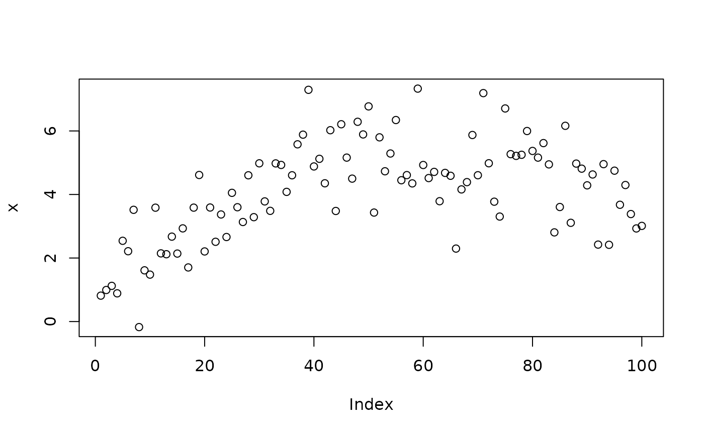
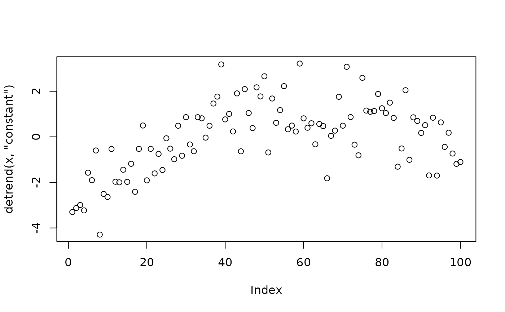
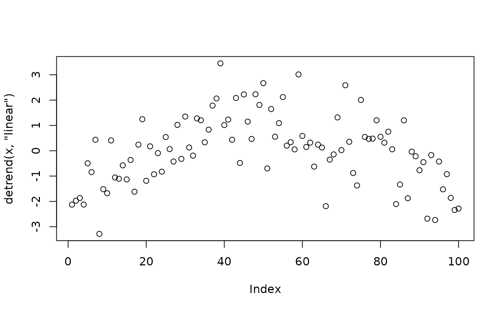
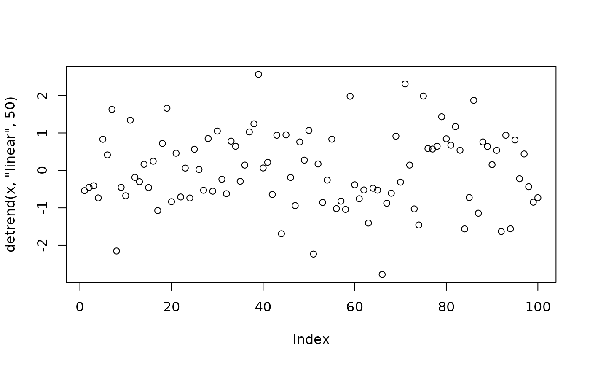

'Detrending' is often used before the signal power calculation.
Usage
detrend(x, trend = c("constant", "linear"), break_points = NULL)
Arguments
- x
numerical or complex, a vector or a matrix
- trend
the trend of the signal; choices are 'constant' and
'linear'
- break_points
integer vector, or NULL; only used when
trend is 'linear' to remove piecewise linear trend; will
throw warnings if trend is 'constant'
Value
The signals with trend removed in matrix form; the number of columns
is the number of signals, and number of rows is length of the signals
Examples
x <- rnorm(100, mean = 1) + c(
seq(0, 5, length.out = 50),
seq(5, 3, length.out = 50))
plot(x)

plot(detrend(x, 'constant'))

plot(detrend(x, 'linear'))

plot(detrend(x, 'linear', 50))
